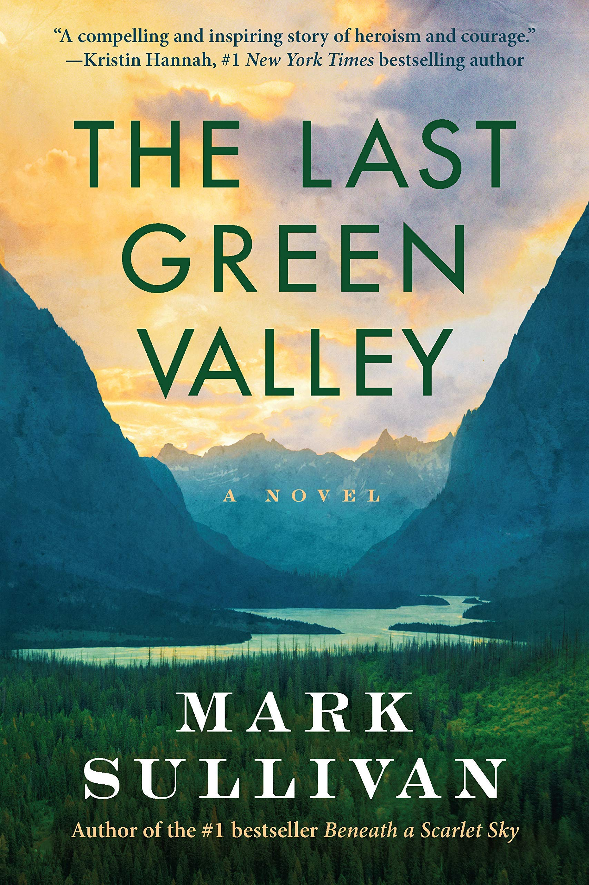

The Last Green Valley
⭐️⭐️⭐️⭐️
This was a little slow to start, with a variety of people to try to keep track of. That said, once it got going, I was totally on board. It ended up being a very engaging story of trial, family bonds, devastation, hope, and determination. I can only imagine what it would be like to be in a predicament such as that of these people - squished between the return of Russia's communist rule, or having to rely on the Nazis, of whom you're all too familiar of their atrocities. While choosing the latter with the ultimate plan to escape even them, this family goes through everything I described and more.
- Previously: What if I Say the Wrong Thing?
- Next: The Fifth Season